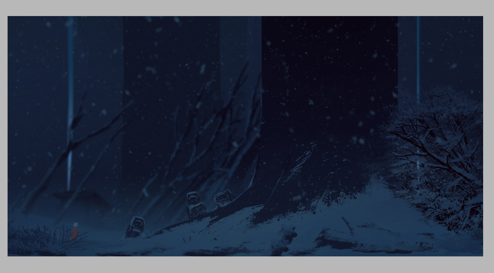

LOC
- Concept artist
Visual artist
Designer
Đang thực hiện về concept cho trò chơi Sky:Children of light (Tạo bởi Thatgamecompany), tôi đang làm về environment và cốt chuyện cho game, sắp tới làm 3D.
Tổng hợp chi tiết.
Công việc chính của tôi?
Làm sao để nhận việc ở trong các công ty phim ảnh hay game?
Read more in scripting.

Một trong số dự án gần đây.
Nếu có thắc mắc công việc của tôi được ghi ở trên nội dung cá nhân, đây là một số nghề tổng hợp:
Writing / Analytical
Art Critic
Art Historian
Art Administrator
Graphic Novel Author
Art and cultural planner
Website Owner / Blogger
Art Historian
Art Administrator
Graphic Novel Author
Art and cultural planner
Website Owner / Blogger
Graphic Design
Typographer
Advertising Director
Book / eBook Designer
Advertisement Designer
Magazine layout designer
Logo / Branding Designer
Packaging / Stationery / Wallpaper Designer
Typographer
Advertising Director
Book / eBook Designer
Advertisement Designer
Magazine layout designer
Logo / Branding Designer
Packaging / Stationery / Wallpaper Designer
Spatial Design
Architect
Course Designer
Set / Stage Design
Landscape Architect
Interior Designer / Decorator
Urban Designer / Town Planner
Playground / Theme Park / Sports Arena / Golf
Architect
Course Designer
Set / Stage Design
Landscape Architect
Interior Designer / Decorator
Urban Designer / Town Planner
Playground / Theme Park / Sports Arena / Golf
Fashion / Textiles
Fibre Artist
Dressmaker
Embroiderer
Pattern Maker
T-Shirt Designer
Costume Designer
Fashion Consultant
Fashion Merchandising
Fabric / Textile Designer
Quilt / Rug / Linen Designer
Accessory Designer (Shoes / Bags / Hats)
Fashion Designer / Sports Apparel Designer
Fibre Artist
Dressmaker
Embroiderer
Pattern Maker
T-Shirt Designer
Costume Designer
Fashion Consultant
Fashion Merchandising
Fabric / Textile Designer
Quilt / Rug / Linen Designer
Accessory Designer (Shoes / Bags / Hats)
Fashion Designer / Sports Apparel Designer
3D Product Design
Weaver
Jeweller
Glass Artist
Prop Designer
Mosaic Designer
Wood Tuner / Carver
Food product Designer
Stained Glass Window Designer
Industrial Designer / Bridge Designer
Miniature Model Maker / Mock-up Artist
Toy Designer / Kite Designer / Utensil Designer
Weaver
Jeweller
Glass Artist
Prop Designer
Mosaic Designer
Wood Tuner / Carver
Food product Designer
Stained Glass Window Designer
Industrial Designer / Bridge Designer
Miniature Model Maker / Mock-up Artist
Toy Designer / Kite Designer / Utensil Designer
Photography
Photo Journalist
Stock Photo Seller
Food Photographer
Portrait Photographer
Fashion Photographer
Wedding Photographer
Director of photography
Underwater Photograher
Advertising Photographer
Photo Journalist
Stock Photo Seller
Food Photographer
Portrait Photographer
Fashion Photographer
Wedding Photographer
Director of photography
Underwater Photograher
Advertising Photographer
Digital / Multi-Media
Animator
Film Editor
Web Designer
Concept Artist
Digital Illustrator
Camera Operator
Digital 3D Modeller
Video Game Designer
Youtube Video Creator
Documentary Filmmaker
Special Effects Designer
Television / film Producer
Iphone / Android App Designer
Animator
Film Editor
Web Designer
Concept Artist
Digital Illustrator
Camera Operator
Digital 3D Modeller
Video Game Designer
Youtube Video Creator
Documentary Filmmaker
Special Effects Designer
Television / film Producer
Iphone / Android App Designer
Fine Art
Mural Artist
Tattoo Artist
Book Illustrator
Courtroom Artist
Graphic Illustrator
Commercial Artist
Art Conservationist
Fine Artist (Painter)
Architectual Illustrator
Story Board Illustrator
Cartoonist / Caricaturist
Special Effects Makeup
Printmaker / Screen Printer
Airbrush Artist / Spray Painter
Technical / Textbook Illustrator
Mural Artist
Tattoo Artist
Book Illustrator
Courtroom Artist
Graphic Illustrator
Commercial Artist
Art Conservationist
Fine Artist (Painter)
Architectual Illustrator
Story Board Illustrator
Cartoonist / Caricaturist
Special Effects Makeup
Printmaker / Screen Printer
Airbrush Artist / Spray Painter
Technical / Textbook Illustrator
Organisation / People Management
Art Dealer
Artist Agent
Art Therapist
Art School Director
Art Supplies Retailer
Private Art Instructor
Primary / Elementary Teacher
University Lecturer / Professor
Middle / High School Art Teacher
Art Dealer
Artist Agent
Art Therapist
Art School Director
Art Supplies Retailer
Private Art Instructor
Primary / Elementary Teacher
University Lecturer / Professor
Middle / High School Art Teacher
Arranging / Display
Food Stylist
Online Curator
Floral Arranger
Picture Framer
personal Stylist
Museum Curator
Gallery Owner / Assistant
Display and Exhibition Planner
Art / Design / Colour Consultant
Food Stylist
Online Curator
Floral Arranger
Picture Framer
personal Stylist
Museum Curator
Gallery Owner / Assistant
Display and Exhibition Planner
Art / Design / Colour Consultant
-Công việc của tôi chính thường là vẽ concept cũng quan trọng vì nhờ nó mới đưa ra ý tưởng khác nhau để chọn lọc
và tạo điều kiện cho người làm về storyboard hay thiết kế 3D thực hiện dễ dàng hơn, visual thường để vẽ ra các góc ví như camera để nhìn cho phim ảnh hoặc game hay hơn.
Làm sao để nhận việc ở trong các công ty phim ảnh hay game?
Muốn biết hơn thì search thêm trên mạng để tư vấn thêm.
Không có đơn giản đâu, tùy vào khả năng bản thân có thể làm cho công ty đó.
Tốt hơn là tự chịu khó giành thời gian trên máy tính học những thứ bản thân biết.
Cách của tôi hiện giờ đang học rất nhiều để thủ sẵn khi ra trường, vận may sẽ đến.
và tạo điều kiện cho người làm về storyboard hay thiết kế 3D thực hiện dễ dàng hơn, visual thường để vẽ ra các góc ví như camera để nhìn cho phim ảnh hoặc game hay hơn.
Làm sao để nhận việc ở trong các công ty phim ảnh hay game?